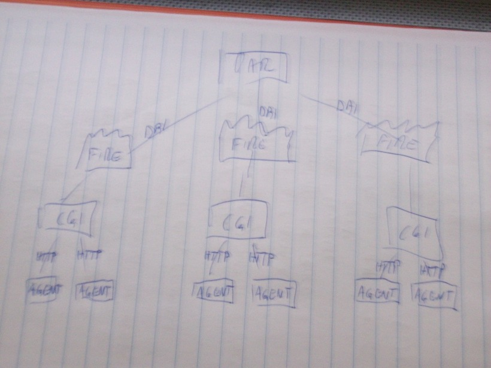
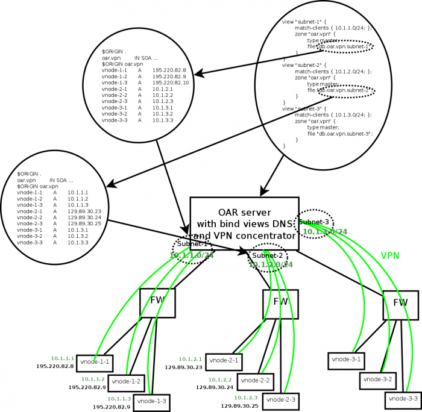

Virtual Cluster GSOC 2010
From WikiOAR
Student and mentor ;), please read carefully this page...
Student: Thiago Presa
Mentor: Derrick Kondo
Co-Mentor: Bruno Bzeznik
Contents |
Student: Things to do before starting
- Subscribe to oar commits mailing list
- Play with Kameleon (generate a OAR/Debian appliance)
- Practice OAR RESTfull API (using the OAR appliance)
- Pratice the Desktop computing feature of OAR
- Take a look at idhal script (provided tgz). Bruno has to document a bit this thing...
Project Pseudo-Specification
Desktop computing integration into the REST API
- Make a new specification of the communication (Restful) between the desktop computing agent and the server
- (re)code the desktop_computing-cgi inside the REST API (make a oar_desktop_computing.pm lib and use it inside api/oarapi.pl)
- adapt the agent to use Restful queries
construct a VPN manager inside the REST API
- Make specifications, based on the "idhal" prototype. The final goal is to be able to integrate VM nodes as OAR resources connected to the server by a tunnel (OpenVPN or other) and then be able to run parallel jobs (MPI for example).
- Make choices: what VPN solution to use? how to optimize the network architecture? (for example, virtual nodes that are on the same LAN should not comunicate using the VPN, but their LAN)
- Make a Kameleon recipe that makes a virtual node. The resulting appliance should look like an idhal appliance: http://idhal.imag.fr/images/. It is a host that connects to the OAR API of its server to bootstrap the VPN configuration or get updates if the VPN config has already been done.
- ...
Initial implementation Workplan
Main Milestones
Tips
TODO list
Mentor
Student
* Write something about the DNS mechanism (especifically bind views) * Allow creation of nodes (just test what I'm already testing but without adding the node beforehand) * Disallow reposting of stageouts (change POST stageouts to PUT)
Links to look at
REST API Specification
Here are the calls as they're today. My plan is to get them prettier as soon as it is fully functional, I'm aware of the lameness
- POST /desktop/agents.(html|yaml|json)
Changes the specified node state to alive, or creates it, if allowed and necessary. Must specify the node in the message, currently planned to be implemented only in json as {hostname: myhostname} Status: I still don't know what to return besides a success code (I guess 200 for activation and 201 for creation).
- POST /jobs/33/run.json
Sets the job state to running.
- POST /jobs/33/terminate.json
This one is being used to set the end of the job. It should have a more meaningful URL, like PUT /desktop/jobs/33/terminate.json, and also send some data in the message content.
- GET /resources/nodes/([-\.\w]+)/jobs.(html|yaml|json)
Gets the jobs which should be launched. I guess this one is almost fully functional.
- POST /jobs/33/stageout.json
- GET /stagein, must have an example
Networking the desktop nodes
Solution 1: proxies
One of the problems with the desktop application is that they might be behind a firewall. This might be a problem, for instance, when running MPI programs. In order to solve this a VPN must be set up. The project IDHAL already does that, and the idea is to rip off from IDHAL :). However, those programs are typically sensitive to network performance. We propose, then, a smart mechanism to "switch context" between free communication and VPN communication. The idea is to use DNS to do so, particularly the allow-updates and the bind views.  I imagine that the DNS would be installed at each CGI server, and the OAR would host also an OpenVPN server. The agents would then be configured with the CGI as the DNS server and get the OAR OpenVPN server info from the CGI server, so that they can connect directly. This is where some issues start to appear... The OAR server must be configured as well:
* It must delegate the DNS queries to the appropriate zone (the ip address of the delegated DNS server should be the vpn address)
First of all, the CGI server would have to be manually configured for doing its job. We must
* Set up the correct OAR Server/OpenVPN server * set up the DNS server to use the OAR as the master/tld DNS server (I forgot the DNS term) * The CGI Servers must be authoritative * Set one bind view for the physical connection and another for the virtual connection
Maybe kameleon could help determining those on image-creation time. The agent would then need the following configurations:
* Set up the correct OAR CGI server * It is not necessary to set up the OpenVPN, since the agent software could get this info from the CGI server * Set up the DNS to the one running on the CGI server
Clearly we must give the hostname of the CGI server to the agent, maybe at image creation time as well... So now is the time to illustrate better the magic of solving the DNS name. I'm going to draw to check for inconsistencies...
Solution 2: DNS views
I propose a DNS only based solution, without local DNS server. --Bzizou 11:12, 6 July 2010 (UTC)
The nodes (agents) have to tell something to the server (OAR API) to say that they belong to a group (ie a VPN subnet). They can simply give some properties for example, that will be recorded in the resources table of OAR: local_ip_address and vpn_number for example. Depending on the provided vpn_number, the API knows what VPN configuration can be generated for this particular node and attribute him its name and vpn ip address. Then, the corresponding zone file (for this subnet) is updated (using the provided local_ip_address). We have to pay attention to dns zones generation: when,and how? because of simultaneous agent registering... 
I think that first, we should validate this model with a working example, and then, work on the design of the automagic process that generates vpn configs and dns zones.
Pros and cons
We need to list pros and cons of the different solutions
- proxies
PRO: The proxy might be used for other things
- dns views
PRO: probably the most flexible CON: single point of failure, might be mitigated with backup servers
- ddns
- /etc/hosts
CON: It would need regular pushing/pulling, which means any change would be communicated in a bounded time range. CON: single point of failure PRO: simple scheme, probably only a cron job with scp
- local routes to VPN subnets
VPN and the REST API
The VPN should play nicely with the REST API, so that the clients can join the VPN fully through the REST API. Probably the following sequence should follow: 0. Server setup 1. Clients generate their certificates 2. Clients submit their certificates for signature on the server 3. Server signs the certificates 4. Clients get their signed certificates back
I'm still investigating whether this should be done on the REST API or openvpn already has some mechanism for this. The possibility of using IPSec is already discarded. Since it is a layer 3 protocol it doesn't play so nicely with firewalls. Also, there's a reference citing that openvpn is more scalable. Certainly the REST API shall publish a gzip file with the root certificate.

{kind=link}
{kind=link}